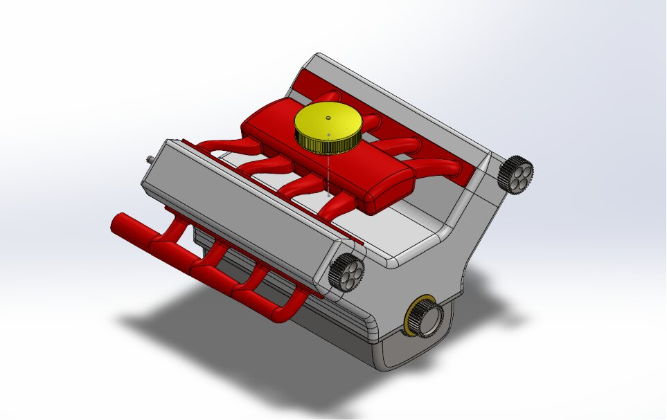
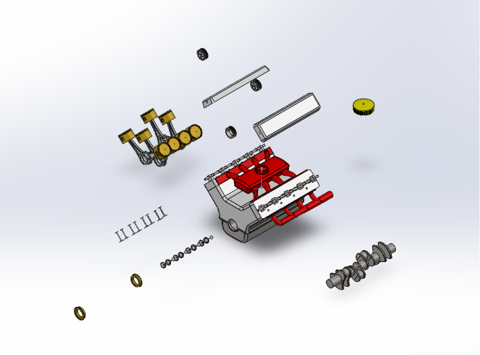

A complete, multi-part CAD model of a V8 engine built from the ground up in SolidWorks.

A kinematic animation of the piston-crankshaft mechanism, visualizing how rotational motion from the crankshaft drives the pistons through their full cycle.
This project started as a way to push my SolidWorks skills beyond simple parts and into a complex, multi-body assembly. A V8 engine felt like the right challenge since it has real mechanical relationships between parts (pistons, connecting rods, crankshaft, valves, cam gears) rather than just static geometry, so I had to think carefully about how components actually interact, not just how they look. Modeling and assembling every major component from scratch also meant working through fit, clearance, and mate relationships across dozens of interconnected parts.
I approached this project by modeling each component individually first, building out parts like the crankshaft, pistons, connecting rods, valves, and cam gears one at a time before bringing everything together in a single assembly. The biggest challenge wasn't any single part, it was managing complexity once everything came together. With dozens of interconnected components (8 piston assemblies alone, plus valves, gears, and shafts), keeping the assembly organized and making sure mates didn't conflict as more parts were added took real attention.
The trickiest fit was getting the pistons and connecting rods to align correctly with the crankshaft. Since these parts all needed to move together (and later drive the motion study), even small dimensional mismatches showed up as interference or awkward mate constraints. This took some trial and error, adjusting dimensions on the connecting rods and piston pin locations until the geometry lined up cleanly across all 8 cylinders and the motion looked mechanically correct rather than just visually assembled.

Tools Used — SolidWorks